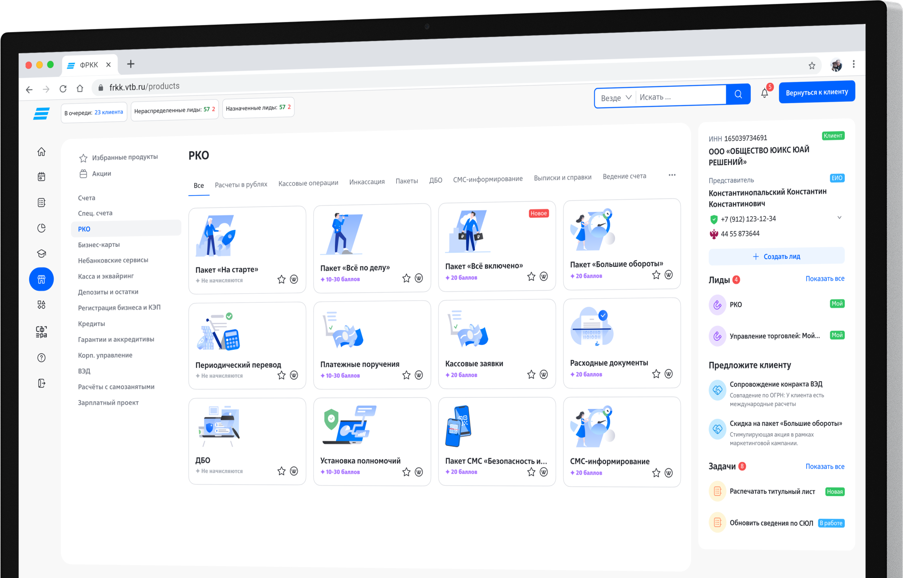
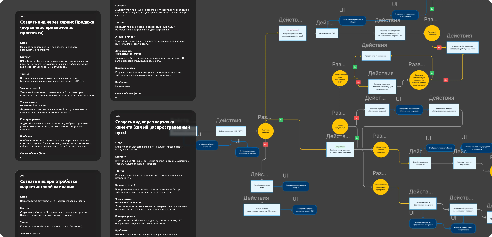
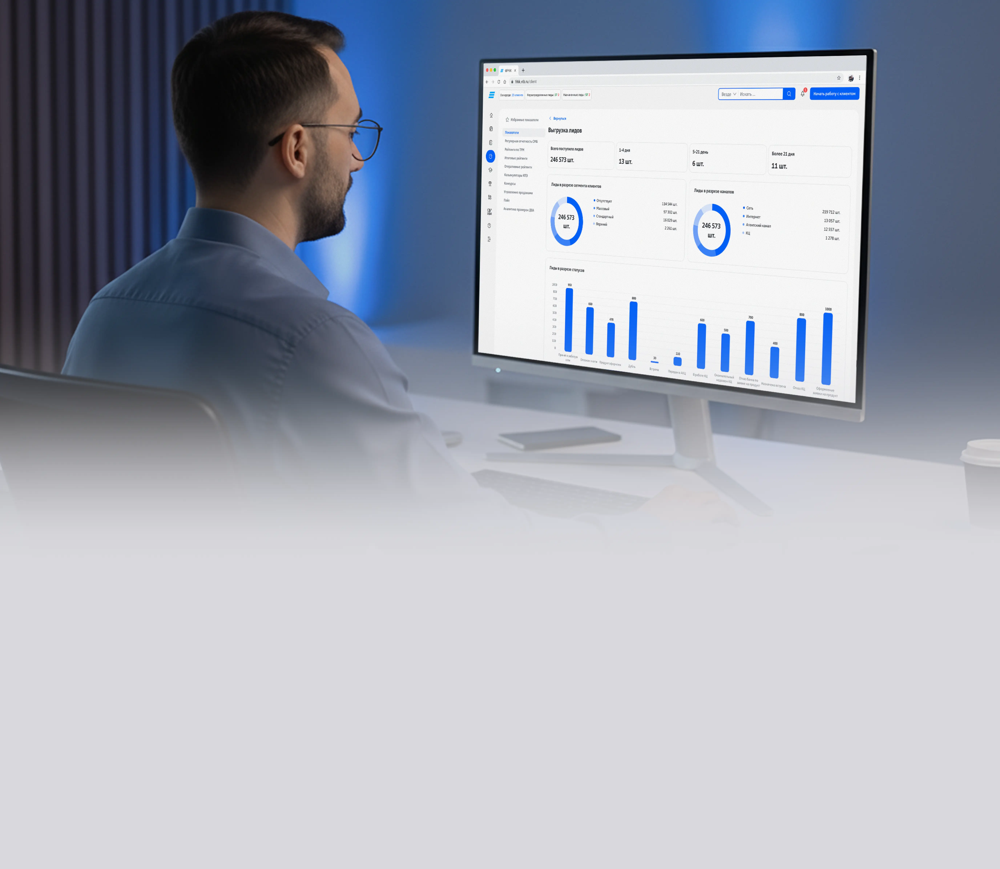
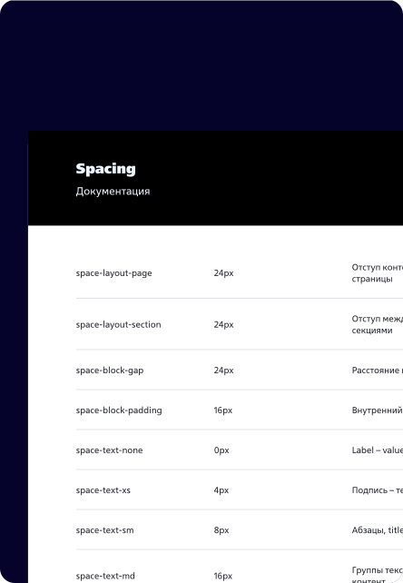
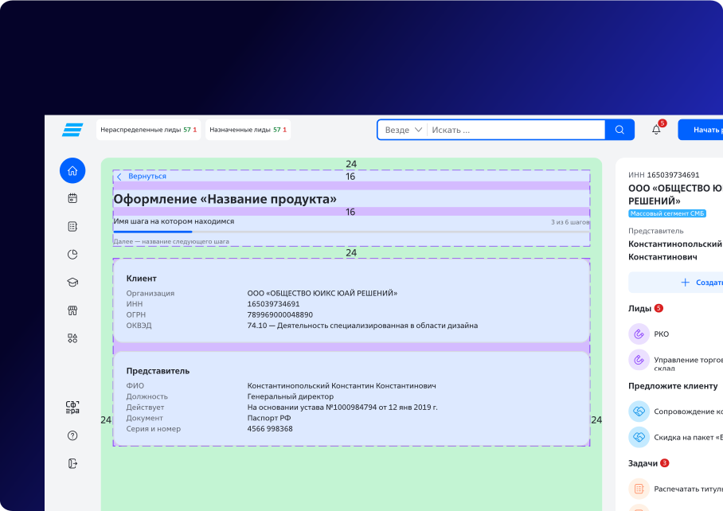
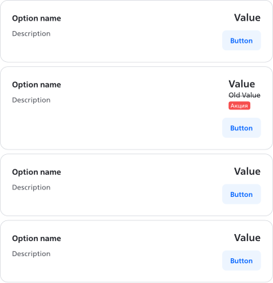

ВТБ. Цифровая платформа для бизнеса c T2M продуктов 30 дней
ФРКК — суперапп, объединяющий Витрину продуктов, Таск-трекер, CRM, Каталог курсов и BI-сервис для 14 000 сотрудников и более 1 млн клиентов.

ФРКК — суперапп и витрина банка для бизнеса
Задача
Перевести все легаси-системы в единую омниканальную платформу с бесшовным опытом для 14 000 сотрудников банка и более 1 млн клиентов СМБ.
Моя роль
Design Lead. Собрать и развивать ключевую команду из 13 человек, заложить и развить визуальное и UX-качество всего дизайна платформы.
Дизайн-директор. Провести аудит интерфейсов и опыта и наладить системную работу над клиентским опытом на уровне стратегии стрима.
Проанализировал 100+ сценариев и десяток путей для создания вижена

100+ микросервисов воспринимаются как одно единое приложение
Понятно
Сотрудник видит все шаги процесса. Видит подсказки прямо в интерфейсе. Пользуется продуктами без инструкций.
Легко
Минимум действий для результата. Сотрудник оформляет продукт в несколько шагов, без лишних экранов и переключений между системами.
Бесшовно
Единый пользовательский опыт, общие принципы проектирования продуктов и сервисов СМБ.
Цифровая витрина продуктов SME
Карточка клиента и CRM
Таск-трекер для сети продаж

Объединил более 50 команд и обеспечил консистентность
Спец. счета
«Ни один запрос за все эти годы не затерялся. Богдан всегда отвечал быстро и по делу, ревью процессов делал так чётко, что мы укладывались в сроки»
Евгения Никишина
Lead Product Designer, ВТБ
Таск-трекер
«Богдан выстроил взаимодействие между несколькими командами в условиях большого количества зависимостей. Стратегическое мышление, сильная UX-экспертиза и системный взгляд — всё в одном человеке»
Эквайринг
«Всегда на связи, решал вопросы быстро и без лишнего шума. Именно такое взаимодействие хочешь в сложных интеграциях»
Открытие счетов
«Согласование макетов — быстро, без лишних итераций. Всегда приветлив и своевременно отвечает. Плодотворное сотрудничество в самом прямом смысле»
Пакеты и тарифы
«Профессионал высокого уровня и комфортный партнёр. Выстроил бесшовный процесс между смежными командами — взаимодействие шло именно так, как должно»
Регистрация бизнеса
«На встрече с руководством, когда спросили с кем легче всего взаимодействовать, я без раздумий назвала ФРКК и Богдана отдельно»
Внедрил дизайн систему UNION для 50+ команд
Унифицировал бизнес-паттерны через дизайн-систему. Adoption rate организмов и паттернов 64%
Tokens

Layout

Guidlines

Components
